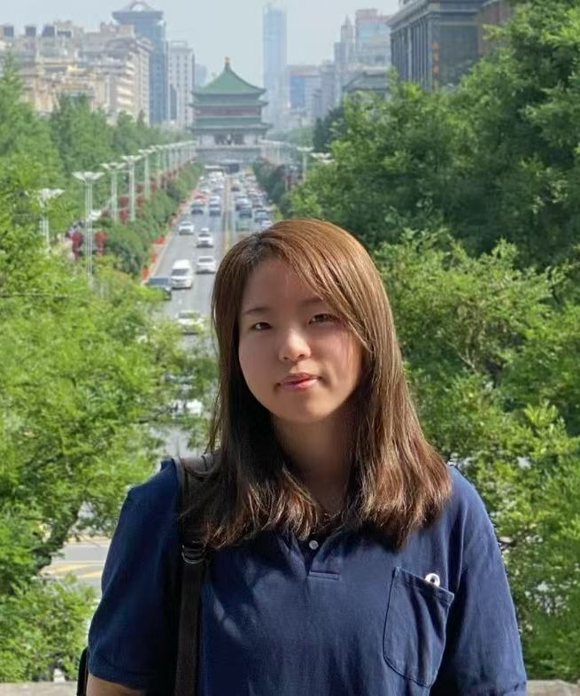

倪雨青 Yuqing Ni

倪雨青
副教授/博士生导师/硕士生导师
江南大学 | 轻工过程先进控制教育部重点实验室
地址：江苏省无锡市蠡湖大道1800号 江南大学 自动化与智能科学学院
邮箱：yuqingni@jiangnan.edu.cn
研究领域
- 网络化控制系统估计与优化：状态估计器设计、网络调度与控制的协同、资源约束下的性能优化
- 信息物理系统隐私与安全：传感器/执行器安全、数据注入攻击与防御、隐私保护状态估计、系统安全性与弹性
- 智能无人系统同步定位与建图：以强化学习为核心的主动SLAM与决策，面向安全对抗的感知与估计
个人简历
倪雨青，博士，副教授，博士生导师，硕士生导师。2016年毕业于浙江大学自动化（控制）系/竺可桢学院，获工学学士学位，随后直博就读于香港科技大学电子与计算机工程学系，并于2020年获得博士学位。曾先后在加州大学洛杉矶分校（UCLA）、瑞典皇家理工学院（KTH）进行交流访问，并在杭州华为企业通信技术有限公司担任高级工程师一职，于2021年加入江南大学自动化与智能科学学院。主要研究方向包括信息物理系统隐私与安全，网络化控制系统估计与优化，智能无人系统同步定位与建图等。作为项目负责人，主持国家自然科学基金青年项目、江苏省自然科学基金青年项目、国家科技部重点研发子课题、无锡市“太湖之光”科技攻关计划基础研究项目、国家外国专家项目（个人类）、工业控制技术全国重点实验室开放课题、中央高校基本科研业务专项基金各1项，参与国家科技部重点研发课题、国家自然科学基金面上项目各1项，江苏省“双创博士”和“科技副总”，江南大学至善青年学者，IEEE Member。截至2026年，在国际权威期刊和会议上发表高水平论文30余篇，授权中国发明专利11项、计算机软件著作4项。担任《物联网学报》青年编委，并担任IEEE Transactions on Automatic Control、Automatica、IEEE Transactions on Control of Network Systems等多项国际重要期刊审稿人。作为指导教师，指导本科生在蓝桥杯全国软件和信息技术专业人才大赛Python程序设计竞赛中获得二等奖1项、三等奖2项，江苏赛区一二三等奖若干，指导国家级、省级大学生创新创业训练计划各2项。主持校级本科教育教学改革研究项目1项，指导本科生获得校级优秀毕业设计3项。
最新资讯
每年招收硕士研究生，也欢迎对科研有兴趣的本科生提前加入实验室！
目前仍有名额，可招收2026年秋季入学的学硕！（以及数学功底较强的专硕）
从2026年开始，每年可以招收1名博士！